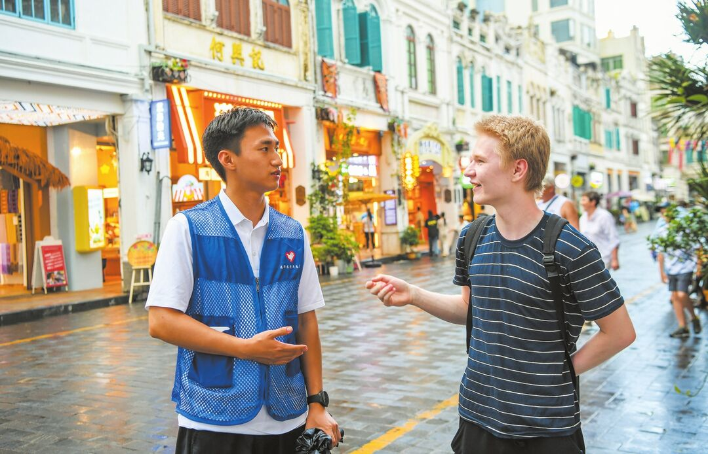
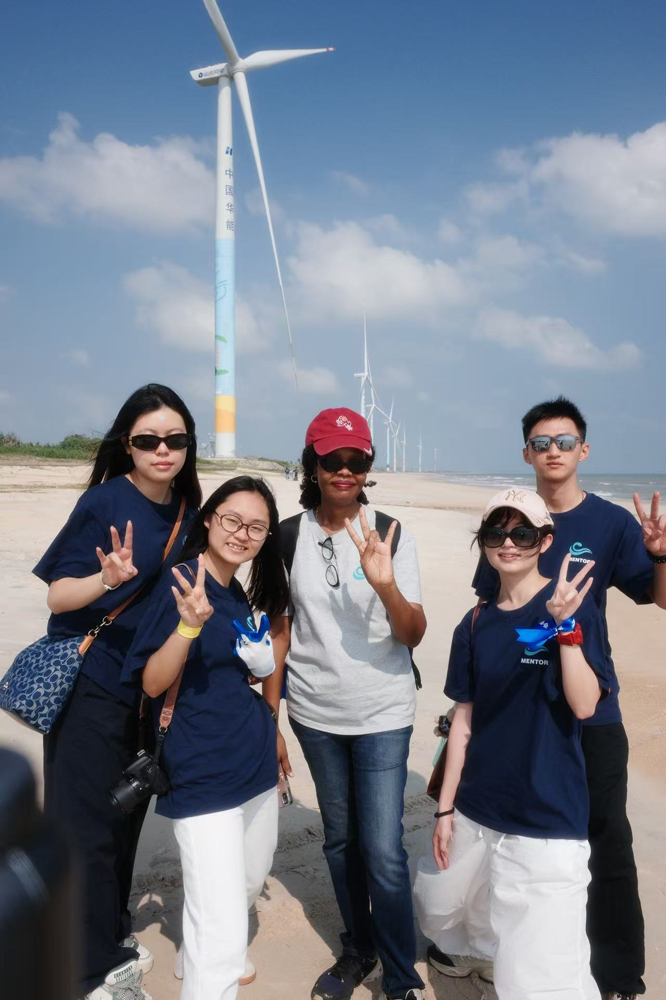
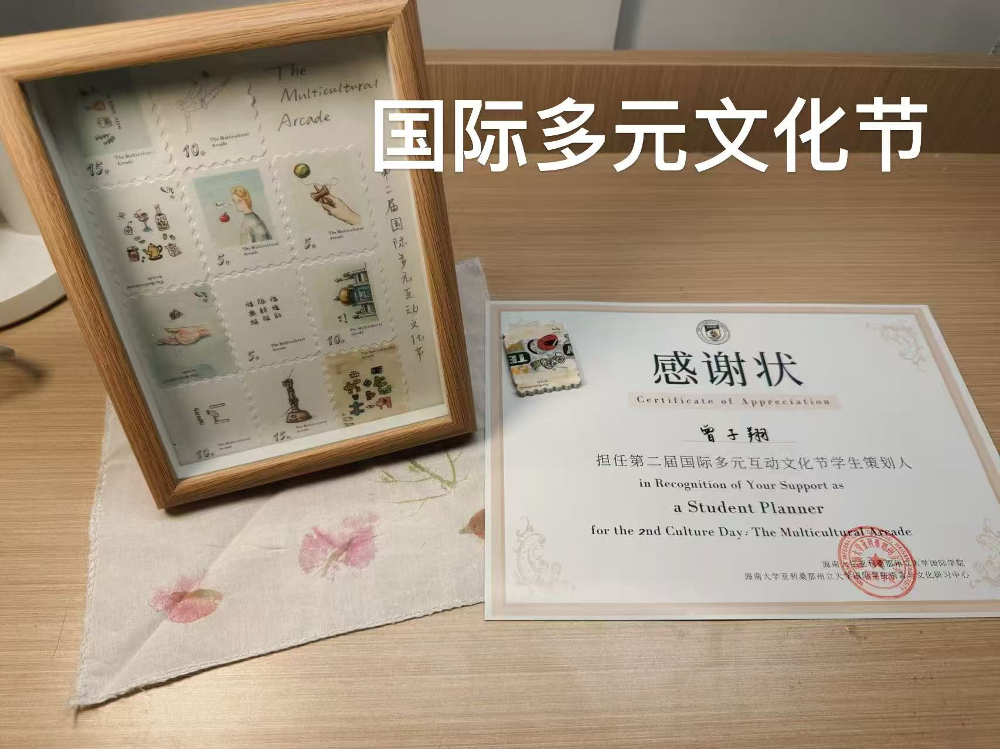
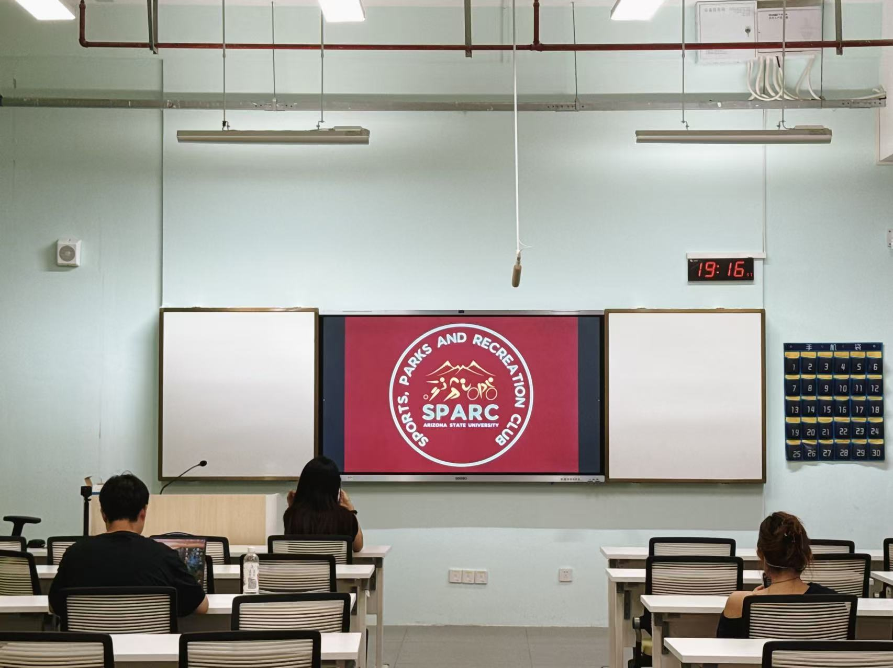
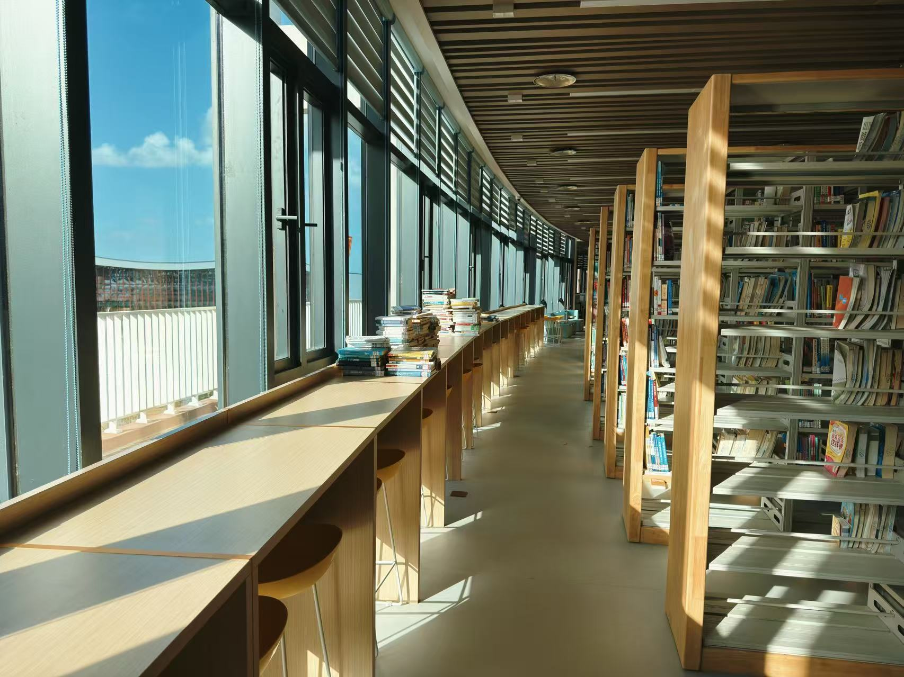
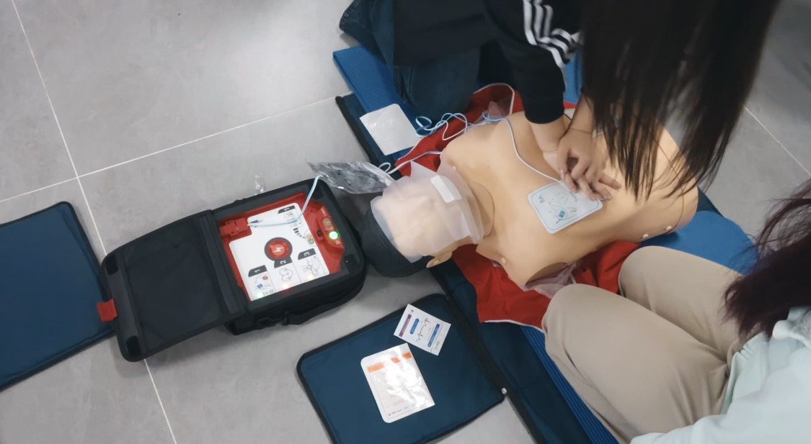
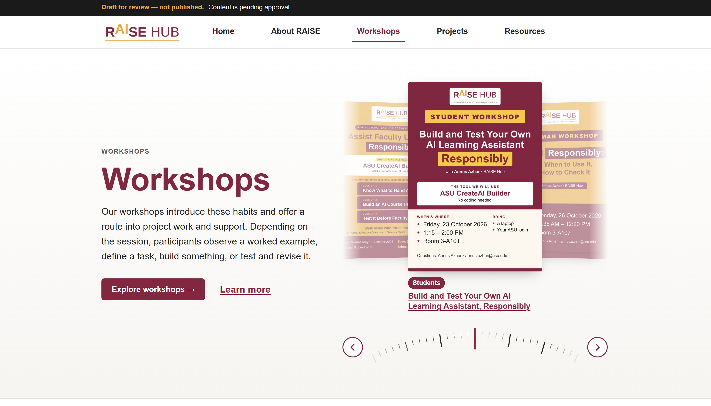

海南大学—亚利桑那州立大学联合国际旅游学院
中外合作办学本科项目，接受旅游与酒店管理领域的中英文课程训练。
- 海南大学学籍专业
- 酒店管理（中外合作办学）
- ASU 专业方向
- Tourism Development and Management (TDM)
关于我
曾子翔，海南大学—亚利桑那州立大学联合国际旅游学院本科生。海南大学学籍专业为酒店管理（中外合作办学），ASU 专业方向为 Tourism Development and Management（TDM）。
目前专业排名 7/104（前约 7%），课程成绩优秀率为 64.36%；获海南大学综合二等奖学金，并获评今朝书院“三好学生”。
目前关注旅游活动与地方文化、社区生活之间的关系。自 2025 年秋季学院环岛课程实践起，通过课程出行和个人旅行持续观察海南不同地区的旅游空间、文化景观与地方生活。
RAISE Hub 实践聚焦 AI 学习助手原型搭建与输出评估；公共机构实习则涉及基础数据核对、总结文件撰写及规范归档。
关注议题
近期动态
课程实践
协助教师开展理论课程与周末户外行动，支持低年级学生的领导力实践、活动规划与现场执行。
荣誉
以持续的课程学习、校园参与和综合表现获得两项校级与书院荣誉。
负责任的 AI 实践
使用 ASU CreateAI Builder 配置课程材料、回答规范与使用边界，通过多类问题测试准确性、来源说明、边界响应和学术诚信表现。
团队项目
与团队共同提交三年男性湿巾市场进入方案 PPT 及 Excel 财务模型。
教育背景
中外合作办学本科项目，接受旅游与酒店管理领域的中英文课程训练。
荣誉
项目与实践
与团队共同制定 GATSBY 未来三年进入印尼男性湿巾市场的方案，参与市场信息整理、进入路径讨论及财务模型搭建，最终共同提交方案 PPT 与 Excel 模型。
参与内容资料搜集、方案讨论、财务模型与团队交付

完成英文讲解培训，面向国际游客介绍骑楼历史、建筑特色与地方文化，并根据现场提问调整讲解内容与表达方式。
参与内容文化资料整理、英文讲解、参观引导与现场问答

作为年长学生助手，协助教师开展周内理论课与周末户外行动，支持低年级学生完成领导力实践及课程活动。
参与内容活动规划、任务分工、学生支持与现场执行
经历
AI 实践与评估
使用 ASU CreateAI Builder 参与课程 AI 学习助手和 RAISE Hub 网站内容原型的实践搭建。
暑期实习
在公共机构工作流程中完成数据、材料与总结文件的基础支持工作。
能力与证据
RAISE Hub 学习助手原型、问题测试、来源核查与人工判断。
疾控中心数据核对、材料整理及 2 份月度工作总结。
骑楼英文讲解、学院环岛课程实践与海南多地个人旅行。
持有 C2 机动车驾驶证，可支持校外走访、项目考察及调研出行。
校园服务与组织参与
学生支持
参与学生支持、信息沟通与活动协助，在面向师生的任务中保持及时回应和清晰记录。
活动协作
参与活动筹备、内容传播和现场执行，服务约 1,000 名参与者，相关参与度提升约 20%。

学生组织
作为负责人之一参与社团延续与首场活动组织，承担流程、主持、现场协调，以及与同伴合作的宣传工作。

志愿服务
参与图书上架与空间整理志愿服务，按分类和位置要求完成书籍整理。

技能培训
完成急救知识与实操训练，建立在现场情境中按步骤判断、协作和响应的意识。

SEIC
新加入，关注乡村儿童与社区发展。
影像记录

海南观察
从 2025 年秋季学院环岛课程实践开始，我在课程出行和个人旅行中持续认识海南。足迹覆盖海南大多数市县，关注海岛旅游、地方文化、村落空间、文化遗产与自然景观在真实地方生活中的呈现。
联系